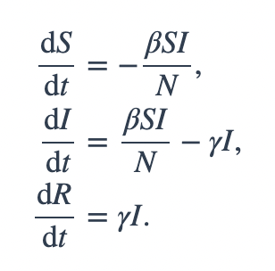

CSS02 Simulation#
SIR, SEIR - Compartmental Model#
Reference
import numpy as np
from scipy.integrate import odeint
import matplotlib.pyplot as plt
# Total population, N.
N = 1000
# Initial number of infected and recovered individuals, I0 and R0.
I0, R0 = 1, 0
# Everyone else, S0, is susceptible to infection initially.
S0 = N - I0 - R0
# Contact rate, beta, and mean recovery rate, gamma, (in 1/days).
beta, gamma = 0.2, 1./10
np.linespace():
https://numpy.org/doc/stable/reference/generated/numpy.linspace.html
Return evenly spaced numbers over a specified interval.
Returns num evenly spaced samples, calculated over the interval [start, stop].
The endpoint of the interval can optionally be excluded.
# A grid of time points (in days)
t = np.linspace(0, 160, 160)
t
array([ 0. , 1.00628931, 2.01257862, 3.01886792,
4.02515723, 5.03144654, 6.03773585, 7.04402516,
8.05031447, 9.05660377, 10.06289308, 11.06918239,
12.0754717 , 13.08176101, 14.08805031, 15.09433962,
16.10062893, 17.10691824, 18.11320755, 19.11949686,
20.12578616, 21.13207547, 22.13836478, 23.14465409,
24.1509434 , 25.1572327 , 26.16352201, 27.16981132,
28.17610063, 29.18238994, 30.18867925, 31.19496855,
32.20125786, 33.20754717, 34.21383648, 35.22012579,
36.22641509, 37.2327044 , 38.23899371, 39.24528302,
40.25157233, 41.25786164, 42.26415094, 43.27044025,
44.27672956, 45.28301887, 46.28930818, 47.29559748,
48.30188679, 49.3081761 , 50.31446541, 51.32075472,
52.32704403, 53.33333333, 54.33962264, 55.34591195,
56.35220126, 57.35849057, 58.36477987, 59.37106918,
60.37735849, 61.3836478 , 62.38993711, 63.39622642,
64.40251572, 65.40880503, 66.41509434, 67.42138365,
68.42767296, 69.43396226, 70.44025157, 71.44654088,
72.45283019, 73.4591195 , 74.46540881, 75.47169811,
76.47798742, 77.48427673, 78.49056604, 79.49685535,
80.50314465, 81.50943396, 82.51572327, 83.52201258,
84.52830189, 85.53459119, 86.5408805 , 87.54716981,
88.55345912, 89.55974843, 90.56603774, 91.57232704,
92.57861635, 93.58490566, 94.59119497, 95.59748428,
96.60377358, 97.61006289, 98.6163522 , 99.62264151,
100.62893082, 101.63522013, 102.64150943, 103.64779874,
104.65408805, 105.66037736, 106.66666667, 107.67295597,
108.67924528, 109.68553459, 110.6918239 , 111.69811321,
112.70440252, 113.71069182, 114.71698113, 115.72327044,
116.72955975, 117.73584906, 118.74213836, 119.74842767,
120.75471698, 121.76100629, 122.7672956 , 123.77358491,
124.77987421, 125.78616352, 126.79245283, 127.79874214,
128.80503145, 129.81132075, 130.81761006, 131.82389937,
132.83018868, 133.83647799, 134.8427673 , 135.8490566 ,
136.85534591, 137.86163522, 138.86792453, 139.87421384,
140.88050314, 141.88679245, 142.89308176, 143.89937107,
144.90566038, 145.91194969, 146.91823899, 147.9245283 ,
148.93081761, 149.93710692, 150.94339623, 151.94968553,
152.95597484, 153.96226415, 154.96855346, 155.97484277,
156.98113208, 157.98742138, 158.99371069, 160. ])
SIR Model#

# The SIR model differential equations.
def deriv(y, t, N, beta, gamma):
S, I, R = y
dSdt = -beta * S * I / N
dIdt = beta * S * I / N - gamma * I
dRdt = gamma * I
return dSdt, dIdt, dRdt
odeint()#
y = odeint(model, y0, t)
model: Function name that returns derivative values at requested y and t values as dydt = model(y,t)y0: Initial conditions of the differential statest: Time points at which the solution should be reported. Additional internal points are often calculated to maintain accuracy of the solution but are not reported.
Reference:
# Initial conditions vector
y0 = S0, I0, R0
# Integrate the SIR equations over the time grid, t.
ret = odeint(deriv, y0, t, args=(N, beta, gamma))
S, I, R = ret.T
# Plot the data on three separate curves for S(t), I(t) and R(t)
fig = plt.figure(facecolor='w', figsize=(10, 5))
ax = fig.add_subplot(111, facecolor='#dddddd', axisbelow=True)
ax.plot(t, S/1000, 'b', alpha=0.5, lw=2, label='Susceptible')
ax.plot(t, I/1000, 'r', alpha=0.5, lw=2, label='Infected')
ax.plot(t, R/1000, 'g', alpha=0.5, lw=2, label='Recovered with immunity')
ax.set_xlabel('Time /days')
ax.set_ylabel('Number (1000s)')
ax.set_ylim(0,1.2)
ax.yaxis.set_tick_params(length=0)
ax.xaxis.set_tick_params(length=0)
ax.grid(which='major', c='w', lw=2, ls='-')
legend = ax.legend()
legend.get_frame().set_alpha(0.5)
for spine in ('top', 'right', 'bottom', 'left'):
ax.spines[spine].set_visible(False)
plt.show()